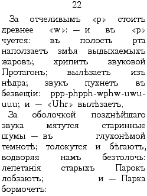
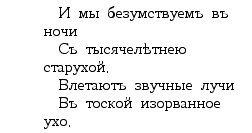
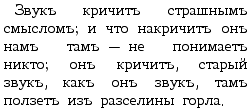

Glossolalia (Section 22)

Behind the distinctive "p" stands a more ancient "w"; -- and in the "p" can be sensed: a serpent of exhaled heats is crawling into the orifice of the mouth; the Protagonist of sound wheezes; it crawls out from the nether world; the sound puffs up in objectlessness: ppp-phpph-wphw-uwu-uuu; and -- "Uhr" crawls out.
Beyond the covering of the latter sound ancient noises are disturbed -- in the deaf-dumb darkness; they knock and run about, introducing to us senselessness [beztoloch]: the prattlings of the old Parcae osculate; and Parca mumbles:

And we rave mindlessly in the night
With the millennium old woman.
Sound rays fly into
The ear torn apart by grief.

The sound screams a terrible thought; and what it screams to us there -- no one comprehends; it screams, the old sound, how it the sound, is crawling in there from the cleft of the throat.